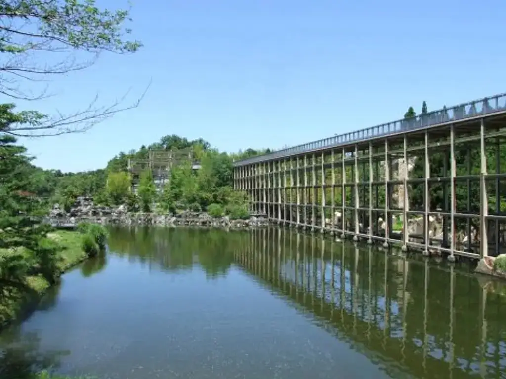
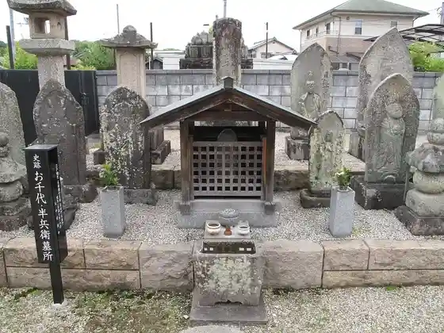
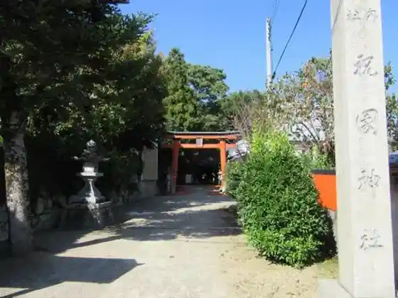
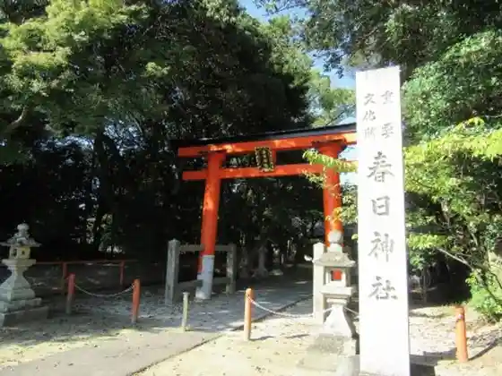

Seika, Kyoto: things to do, food and stays
Seika · Kyoto
Seika
Highlighted on the Kyoto map.

Sights



Dining
Buranje Yamada
ブーランジェ ヤマダ

Bakery in Hikaridai, Seika. Open daily 08:00-18:30.
Katsu Ando Katsu
かつアンドかつ
Restaurant in Hikaridai, Seika.
Mingei Yakiniku Geihinkan
民芸焼肉 迎賓館
Barbecue restaurant in Hikaridai, Seika. Open daily 16:00-23:00.
Saizeriya
サイゼリヤ
Italian restaurant in Seika Machi Hikaridai, Seika. Open daily 11:00-02:00.
Washoku Mentokoro Sagami Gakken Seika Dai Branch
和食麺処サガミ 学研精華台店

Japanese restaurant in Seika.
Yakiniku Genki Ichiban
焼肉元気一番

Barbecue restaurant in Hikaridai, Seika.
A Un
あ うん
Pub in Seika.
cafe Kokoraku
cafe ここらく
Cafe in Seika.
Chingu
チング
Restaurant in Seika.
Chukafu Izakaya Gyoza no Hanahasu
中華風居酒屋 餃子の華蓮
Chinese restaurant in Seika.
Coffee House TSUTAYA
コーヒーハウス ツタヤ
Cafe in Seika.
Doutor Coffee Shop
ドトールコーヒーショップ
Cafe in Seika.
Futaba
ふたば
Pastry shop in Seika.
Harunire Cafe
ハルニレカフェ
Cafe in Seika.
Joyfull
ジョイフル
Western-style restaurant in Seika. Open 24 hours, every day.
Kobe-ya
神戸屋パン
Bakery in Seika.
Kura Sushi
くら寿司
Sushi restaurant in Seika.
Marugame Seimen
丸亀製麺
Noodle restaurant in Seika.
McDonald's
マクドナルド
Burger fast-food restaurant in Seika. Open daily 06:00-23:00.
Nippon Ryori Suigatsu
日本料理 酔月
Japanese restaurant in Seika.
Nuchigusui Toritori Hosono Branch
ぬちぐすい 鳥鳥 祝園店
Pub in Seika.
O Kashi Tsukasa Shon Do
御菓子司 松雲堂
Sweets shop in Seika.
Okonomiyaki Kihakokoyanen
お好み焼きはここやねん
Japanese restaurant in Seika. Open daily 11:30-24:00.
Rain
ライン
Restaurant in Seika.
Rakuraku Tei
楽楽亭
Restaurant in Seika.
Ru Furutie Hosono Branch
ル・フルティエ 祝園店
Pastry shop in Seika.
Sakebo Midori
酒房 緑
Pub in Seika.
Starbucks
スターバックス
Cafe in Seika.
Sushiro
スシロー
Sushi restaurant in Oaza Zakuro, Seika. Open Mon-Fri 11:00-23:00; Sat-Sun 10:30-23:00.
Torikizoku
鳥貴族
Pub in Seika.
Dining listings marked “Dining in” use data © OpenStreetMap contributors (ODbL); photos are from each venue’s own site or Wikimedia Commons as credited.